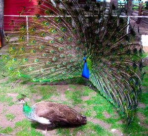

Fisherian runaway
Fisherian runaway is a model of how sexual selection can lead to exaggerated physical or behavioral traits (ornament) and exaggerated preferences for these traits.[1][2] These exaggerated traits can potentially reduce population viability[3] and contribute to extinction.[4][5][6] The name derives from the originator of the concept, Ronald Fisher, the 20th century British statistician, geneticist, eugenicist and racialist.
Fisherian runaway is a popular meme in the manosphere used to argue women's mate choices may be maladaptive, resulting in excessive emphasis on superficial courtship and selecting exaggerated anti-social traits that incite male competition. Fisherian runaway is often misunderstood to refer to exaggeration as a lifestyle choice, but it actually refers to an evolutionary process over many generations. However, sexual preferences evolved this way can motivate extreme body modifications like breast/penis enlargement, hormone supplements, bodybuilding and plastic surgery.
Explanation[edit | edit source]

Positive feedback[edit | edit source]
Fisherian runaway is a selection process occurring over many generations, in which the one sex (either male or female) becomes more choosy about a heritable trait for the sole reason that it will make the offspring more attractive. As the choosiness for the trait increases, the selective pressure to prefer the trait increases too, forming a positive feedback loop. In response to the increased choosiness, the other sex evolves to enlarge, overcomplicate or beautify that trait in efforts of becoming more attractive, eliciting supernormal stimuli in the opposite sex. The exponential nature of positive feedback loops exerts a strong selection pressure that the resulting exaggerated ornament may reduce mobility and increase vulnerability to predators and to sudden environmental changes. The result is strong selection for a trait and sexual attraction to it only because it is attractive to others (Art for art's sake), not because of any other survival value, i.e. the trait bears no advantage regarding strength, health, ability, morality or overall "good genes". Since females are more choosy in many species throughout the animal kingdom (including humans), the males tend to be more ornamented.
Initiation[edit | edit source]
Positive feedback loops in sexual selection can be arbitrarily initiated when a trait is slightly correlated with fitness, for example when it is associated with viability, objective aesthetics (aesthetic sexual selection), or when a trait is similar in appearance to already attractive or otherwise valued objects or body parts.[7] For example, women's breasts may have been selected by men to mimic their buttocks because the latter was already a sexually attractive body part before humans developed upright posture, and then Fisherian runaway may have lead to breasts becoming increasingly larger and increasingly attractive to men.[7]
Over the course of the positive-feedback process, the initial correlation with fitness of the trait in question may lose its importance.[8]
Looks[edit | edit source]
Feedback loops in sexual selection like Fisherian runaway may have played a role in the evolution of looks and beauty in some animals, but unlikely in case of facial attractiveness in humans as there is no positive link with lifetime reproductive success in a variety of cultures.[9] Even though human females are more choosy in accordance to Bateman's principle, it is women who seem to be more ornamented with their swollen breasts[10] and hour-glass shaped body that men strongly desire, but which serve no known biological purpose, though the hourglass shape may be an honest indicator of virginity and nubility which men desire cross-culturall.[11] Besides an outcome of sexual selection, the importance people put on looks in mate choice could be merely a spandrel of a general preference for aesthetics, or it could be driven by a (weak) link between good looks and overall good and healthy genes. In industrialized nations, facial masculinity is unrelated to mating and reproductive success (RS). Strength and muscularity are also only weak, but consistent predictors of RS.[12] Women's hourglass shaped waist is not linked to higher RS or better health.[13] Unless there are strong confounds in industrial nations (such as high mutational load and low ecological harshness), the absence of a link to RS means these traits are unlikely sexually selected. Men's V-shaped upper body, especially determined by the collar bone length, may be subject to sexual selection as it is sexually dimorphic, linked to RS and women's attractiveness ratings. At the same time, a long collar bone actually decreases chances of survival, resulting in decreased strength and throwing ability (see body attractiveness). However, adaptations that merely fake physical strength may also have evolved as a means of physical intimidation during male intrasexual competition. See the penis article for a discussion of the plausibility of sexual selection having acted upon it.
Behavior[edit | edit source]
Evolutionary psychologist Geoffrey Miller suggested strong positive-feedback processes in sexual selection to have given rise to higher human cognition and behavior, which he regards as too advanced and exaggerated for the necessities of human survival.[14] Indeed, intelligence itself is sexually attractive with the most attractive IQ score being 120, far above average intelligence.[15] In some mating contexts, male courtship consists in eliciting super stimuli in women's brains by cognitive performances such as poetry, dancing, art and humor.[14] However, the overall evidence suggests such behavior and intelligence evolved through through intrasexual and inter-group competition and survival selection rather than sexual selection.[16][17] Men with a dark personality do have higher reproductive success and at least some women are sexually attracted to such men (see below), which may be a potential trait that has been sexually selected and/or that is under sexual selection, and possibly, runaway selection.
Examples[edit | edit source]
Ostracod with overly large genitals
_at_China_National_GeneBank%2c_Shenzhen.jpg/450px-1920px-Male_Peafowl_(Peacock)_at_China_National_GeneBank%2c_Shenzhen.jpg)
A male Peafowl with completely useless plumage
The Sabre-Toothed Tiger evolved comically large teeth
Skeleton of the Irish Elk
)
There are many animals with exaggerated ornament, e.g. peacock tail[18] and narwhal tusks.[19] Some animal species have been theorized to have gone extinct in part due to runaway selection. A prominent example is the Irish elk. Female Irish elk may have selected male elk with increasingly larger antlers. Some recovered antlers measure 9 ft (2.7 m) across and weigh over 90 pounds (40 kg). The extreme nutritious cost to grow such huge antlers, coupled with the burden of such a heavy load, were possibly more than the males could handle, particularly as their food source density decreased during environmental changes.[20] Natural selection would have favored males with smaller bodies and antlers for their lower nutritional needs and superior mobility, however the sexual selection pressures were strong and the ornament has become so fixed in a positive feedback loop, that it may have ultimately caused extinction.[6]
Research into sexual selection and how it influences extinction is scarce, partly because fossils don't reveal much about gender, more or less animal behaviour. But a few attempts have been done to study it systematically. Reseracher Fernandes Martins did this for 93 ostracod species. She found that those species where males were biggest relative to females went extinct 10x faster than species with smaller males relative to females.[21]
Female mate choice[edit | edit source]
Sexy son hypothesis[edit | edit source]
The sexy son hypothesis was proposed by Weatherhead & Robertson in 1979 and considers the consequence of runaway selection for female mate choice.[22] It simply states that the positive feedback loop can make women so attracted to a man's ornament that women will readily choose a "sexy man" regardless of other considerations such as his morality or paternal investment, because the man's ornament—which is partly heritable—will confer the same reproductive advantage on their male offspring. The male offspring will hence also be "sexy" to other women, making up for any other flaws on part of their father.[23] This is particularly staggering in women, otherwise coy, engaging in casual sex with men way above their league (i.e. getting pumped and dumped), then resulting in single mothers and the betabuxx phenomenon.
Since women heavily depended on men's provision throughout human history,[24] only a tiny percentage of men are good looking enough to make up for other potential flaws and hence can more likely (though not entirely) skip women's typical coy waiting time.[25] Women would also much more readily forego using a condom with a good looking mate.[26] Of course, men also more readily copulate with sexy women, even more than women, but men have less parental investment and hence do not need to care as much about such considerations. This is evidenced by men's much higher inclination to copulate with a random stranger, i.e. lower standards for casual sex.[25] Men are also more choosy when they actually have to provide.
Hence, for women, copulating only based on sexiness has more drastic implications, explaining why people care less about the "sexy daughters" phenomenon. However, arguably, a similarly risky strategy for men is raping a sexy woman (to produce sexy daughters as a promising vehicle of their own genes). Both are irresponsible and socially parasitic as they depend on others investing in the offspring (in modern societies via taxes). Engaging in alpha fuxx, beta buxx, the woman risks not being provided for. Engaging in rape, the man risks death and exile and also won't provide for the offspring. But provided some do engage in these strategies, may mean such sexual strategies have evolved because better looking offspring can make up for these risks on average (in terms of evolutionary fitness).
It is disputed to which extent male choice can actually result in a positive-feedback process for selecting female ornament (sexy daughters), but men's strong attraction to large female breasts points to runaway selection regarding sexy daughters.
The effect of a minority of women choosing merely based on looks rather than men's ability to provide may also be explained by such women being fast-life strategists genetically.
Maladaptiveness[edit | edit source]
Various members of the manosphere claimed that the increasingly dimorphic beauty standards that men are expected to adhere to in a harsher modern dating environment may be the beginning of a Fisherian runaway or intensification of existing ones. Women are thought to increasingly choose men with the most sexually dimorphic traits such as cartoonishly large muscles and frame, with no selective attention paid to traits like loyalty or morality. As such, women's mate choice may be maladaptive and reduce population viability.
This results in an even higher competitive environment among men without physically sexually dimorphic traits. Due to behavioral traits also being sexually selected, it has been claimed, men will also become more psychopathic and disagreeable to win female attention, exaggerating character traits which many see as incompatible with modern civilization. There is indeed some evidence that dark triad traits are currently being sexually selected by (at least Western) women,[27][28] and that criminal and anti-social men often have more sexual partners and reproductive success.[29][30][31] Some view this data as evidence of the beginning of a process of fisherian runaway selection. Research on sexual selection theory by Puts (2010) suggested women's preference for highly dominant men may have partly been a result of sexual selection.[32][33]
The originator of the concept of Fisherian runaway, Ronald Fisher, had a teleological view of evolution where he saw natural and sexual selection as being united in driving evolutionary 'progress' towards a higher form of life. He invoked fears of runaway selection leading to the decline of societies, warning that selection for what he saw as more frivolous qualities such as wealth alone would result in negative social outcomes.[34]
Men's rights activist Warren Farrell in his book, The Myth of Male Power, warned women that their preference for and encouragement of, "hunter-killer", "star quarterback", type men could cause the extinction of the human race with the arrival of nuclear technology. He also claimed that since civilization and the industrial revolution dark triad traits have become maladaptive, as the traits which foster a healthy society have switched from might-makes-right individual brutality, to cooperation, intelligence, empathy etc.
Even though anti-social men do outreproduce nice guys,[35] today's society differs from Farrell's predictions in that there is actually a trend for men to become more androgynous/feminine, e.g. testosterone levels, sperm count[36] and mandible sizes have reduced considerably,[37] possibly caused by mutation, pollution, obesity and/or a masculinity crisis. Demotivated from competing in production of social value, today's men increasingly engage in LDARing, NEETing, or spending all their time looksmaxxing, with women seemingly increasingly becoming choosy about looks enabled by their financial independence, as sexologist Kristin Spitznogle pointed out. Hence, society is becoming an exact mirror image of the Wodaabe African tribe, the most matriarchal society on the planet, but also slight selection toward more ruthless and anti-social males at the same time.
… and after 1000 years. The multiple heads are very prone to breaking off and becoming infected. Higher disagreeableness provokes wars
Discussion[edit | edit source]
Good genes[edit | edit source]
Good genes hypothesis or Zahavi's handicap principle claims exaggerated ornament is a costly and hence a reliable signal of other desirable traits. For example, a peacock with a very large tail would be easy prey (which is costly), and thus would most likely have other good traits that make up for this handicap (good genes). There is, however, mixed supporting scientific evidence, with a consistent, but very small link between looks and health, but mixed evidence about the link between health and reproductive success, with people vastly overestimating the correlation between good looks and various positive attributes (halo effect).[38]
A computer model created by Chandler et al., found evidence that traits initially spread by runaway selection can also become indicator traits of "good genes". They also found that these ornamental traits could serve as indicators of "good genes" even when they didn't function as costly signals, contradicting Zahavi's handicap principle, so good genes and runaway selection may not be mutually exclusive.[39]
Political dimension[edit | edit source]
Topics related to sexual selection are subject to political controversy and academic bias, presumably due to female scientists being involved who do not want to portrait female choice or behavior as maladaptive. The notion of "sexy sons" has an (arguably justified) slut-shaming undertone, which would seem politically incorrect and prone to self-censorship. Throw in the women-are-wonderful effect and you get "good genes" also implies that women select the "best" men, so their sexual freedom is justified and good. Some feminists unsurprisingly hold such good genes views, some of which have worked as criminal investigator and "justice fighters" for the FBI.[40]
Further, considering women's secondary sexual characteristics as means of conspicuously advertising themselves, implies that pubescent girls signal sexual maturity long before reaching legal age. Teenager pregnancies are thought to incur a significant cost in modern society, hence any theories to this extent are prone to be shunned politically.[41] Arguably, anti-natalism, female herd mentality and hysteria have created a moral panic about these matters.[42]
These issue might contribute to the academic rivalry between the Good Geners and Fisherian's camps,[43] which seems to be a sexual conflict expressing as intellectual conflict.
Extinction[edit | edit source]
There is disagreement whether sexual selection alone can cause extinction. It likely increases the chances of extinction when combined with environmental factors like sudden ecological changes.[44][45][46] Base sexual preference is thought to be able to potentially increase, but also decrease population viability, i.e. make the species more likely to go extinct.[47][48][49] However, there has been little support of highly sexually dimorphic mammals being more endangered.[50] There are scientific models that show under a stable environment, a feedback loop can develop where male intrasexual competition leads to a linear increase in size dimorphism, outstripping the ability of the environment to support this increased size.[51] Theoretic models suggest extinction can only occur in combination with sudden environmental changes rather than by runaway selection alone, as long the ornamented individual bears the cost that is.[52]
References[edit | edit source]
- ↑ Fisher RA. 1915. The evolution of sexual preference. Eugenics Review. 7:184–192. [Google Scholar]
- ↑ Huk T, Winkel WG. 2008. Testing the sexy son hypothesis—a research framework for empirical approaches. Behavioral Ecology. 19:456–461.[Google Scholar]
- ↑ Encyclopedia of Ecology, By Brian D. Fath, page 316 [Google Books]
- ↑ https://www.theatlantic.com/science/archive/2018/04/males-penises-ostracods-extinction-sexual-selection/557756/
- ↑ The evolution of sexual strategy in modern humans: an interdisciplinary approach by Collins, Kendra Marie, https://studyres.com/doc/2550939/--california-state-university
- ↑ 6.0 6.1 Moen et al., 1999 http://citeseerx.ist.psu.edu/viewdoc/download?doi=10.1.1.525.2990&rep=rep1&type=pdf
- ↑ 7.0 7.1 Fuller, R. C., Houle, D., & Travis, J. 2005. Sensory Bias as an Explanation for the Evolution of Mate Preferences. [Abstract], p. 444
- ↑ https://academic.oup.com/beheco/article/19/2/456/214088
- ↑ https://doi.org/10.1016/j.evolhumbehav.2012.01.002
- ↑ https://doi.org/10.1016/j.evolhumbehav.2010.02.005
- ↑ Pazhoohi, F., Macedo, A. F., Doyle, J. F., & Arantes, J. (2019). Waist-to-Hip Ratio as Supernormal Stimuli: Effect of Contrapposto Pose and Viewing Angle. Archives of Sexual Behavior. doi:10.1007/s10508-019-01486-z
- ↑ https://www.biorxiv.org/content/10.1101/2020.03.06.980896v3
- ↑ https://www.ncbi.nlm.nih.gov/pmc/articles/PMC6563790/
- ↑ 14.0 14.1 https://ontherapyaspse.files.wordpress.com/2012/04/geoffrey-miller-the-mating-mind.pdf
- ↑ https://www.researchgate.net/publication/321640585
- ↑ https://www.sciencedirect.com/science/article/abs/pii/S1090513821000453
- ↑ https://www.sciencedirect.com/science/article/abs/pii/S1090513804000595
- ↑ https://link.springer.com/chapter/10.1007/978-3-319-46233-2_17
- ↑ https://royalsocietypublishing.org/doi/10.1098/rsbl.2019.0950
- ↑ The evolution of sexual strategy in modern humans: an interdisciplinary approach by Collins, Kendra Marie, https://studyres.com/doc/2550939/--california-state-university
- ↑ https://www.theatlantic.com/science/archive/2018/04/males-penises-ostracods-extinction-sexual-selection/557756/
- ↑ Weatherhead PJ, Robertson RJ. 1979. Offspring quality and the polygyny threshold: 'the sexy son hypothesis' The American Naturalist. Volume 113. Issue = 2. Pages 201–208 [Abstract]
- ↑ https://academic.oup.com/beheco/article/19/2/456/214088
- ↑ https://incels.wiki/w/Scientific_Blackpill_(Supplemental)#Women_were_historically_predominantly_involved_in_cooking_and_they_never_dominated_men
- ↑ 25.0 25.1 https://incels.wiki/w/Scientific_Blackpill#Men_like_61.9.25_of_female_profiles.2C_women_like_only_4.5.25_of_male_profiles
- ↑ https://incels.wiki/w/Scientific_Blackpill#Women_are_less_likely_to_use_a_condom_with_a_more_attractive_male_partner
- ↑ https://www.researchgate.net/publication/273809664_The_Dark_Triad_personality_Attractiveness_to_women
- ↑ https://link.springer.com/article/10.1007/s40806-019-00213-0
- ↑ https://web.archive.org/web/20120513221622/http://abacon.com/ellis/tables/ch8.pdf
- ↑ https://www.ncbi.nlm.nih.gov/pubmed/12625439
- ↑ https://www.sciencedirect.com/science/article/abs/pii/S1090513814000774
- ↑ https://www.tandfonline.com/doi/abs/10.1080/07418825.2016.1216153?journalCode=rjqy20
- ↑ https://doi.org/10.1016/j.evolhumbehav.2010.02.005
- ↑ https://www.jstor.org/stable/4027434
- ↑ https://incels.wiki/w/Scientific_Blackpill#tocPersonality
- ↑ https://academic.oup.com/jcem/article/92/1/44/2597938
- ↑ https://incels.wiki/w/Scientific_Blackpill#Men_with_dominant.2C_aggressive_faces_.28high_fWHR.29_are_preferred_for_short_term_relationships
- ↑ https://incels.wiki/w/Scientific_Blackpill#Attractive_people_are_perceived_much_more_positively_than_they_really_are
- ↑ https://app.dimensions.ai/details/publication/pub.1009220931
- ↑ https://twitter.com/DCELL68/status/992147364084310016 [Archive.is]
- ↑ https://www.researchgate.net/profile/Steven_Gaulin/publication/332968715_Evidence_supporting_nubility_and_reproducitve_value_as_the_key_to_human_female_physical_attractiveness/links/5cd870fb458515712ea67628/Evidence-supporting-nubility-and-reproducitve-value-as-the-key-to-human-female-physical-attractiveness.pdf
- ↑ https://incels.wiki/w/Scientific_Blackpill_(Supplemental)#90.25_of_victims_of_workplace_mass_hysteria_are_women
- ↑ https://www.amazon.com/Red-Queen-Evolution-Human-Nature-ebook/dp/B006O4227U
- ↑ https://biology.stackexchange.com/questions/239/is-there-any-evidence-that-sexual-selection-may-lead-to-extinction-of-species
- ↑ The evolution of sexual strategy in modern humans: an interdisciplinary approach by Collins, Kendra Marie, https://studyres.com/doc/2550939/--california-state-university
- ↑ Moen et al., 1999
- ↑ https://besjournals.onlinelibrary.wiley.com/doi/full/10.1111/1365-2656.12601
- ↑ https://www.sciencedaily.com/releases/2018/04/180411131646.htm
- ↑ https://www.nature.com/articles/d41586-018-04059-7
- ↑ https://www.ncbi.nlm.nih.gov/pmc/articles/PMC1691875/
- ↑ http://www.jstor.org/stable/2410506
- ↑ "Sexy to die for? Sexual selection and risk of extinction" by Hanna Kokko and Robert Brooks, Ann. Zool. Fennici 40: 207-219. [Abstract]